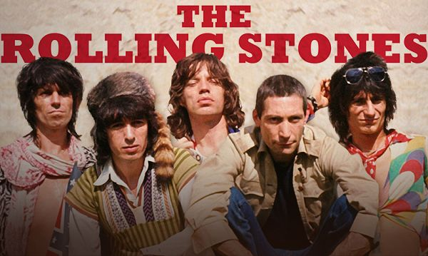

During their 50-plus year career, The Rolling Stones have married their love of blues and american R&B with a vast array of styles and genres: disco, garage, psychedelic rock and even PUNK.
The constant through line, however, has been the band's swagger—thanks first and foremost to the Glimmer Twins, Mick Jagger and Keith Richards.
In 2012, the Rolling Stones celebrated 50 years together with an extended victory lap that included tour dates, a documentary, a book and a new hits compilation. It was an appropriately high-profile, lavish celebration for a group that's survived—and thrived—in spite of lineup changes and bandmate deaths, changing musical trends and personal challenges.
Their secret? A stubborn willingness to stay current coupled with limitless confidence in their own musical abilities. Plus, in vocalist Mick Jagger and guitarist Keith Richards, the Stones landed one of rock's great twosomes. The former's a loose-hipped, impossibly energetic stage presence with an almost jovial vocal sneer; the latter lays on nothing but thick attitude thanks to freewheeling, fiery guitar riffs.
The band's roots date back to early 1950s England, when Jagger and Richards became friends while attending primary school together in Dartford, Kent. The pair lost touch after their educational paths diverged, but then reconnected in 1961 at, of all places, the Dartford train station: Jagger was headed to the London School of Economics, and Richards to Sidcup Art College.
The duo rekindled their friendship by discovering a shared affinity for Muddy Waters and American R&B artists such as Chuck Berry. This led to Richards joining Jagger's then-group, Little Boy Blue and the Blue Boys—a band that eventually fizzled out, but cemented a musical partnership that would last for decades.
Richards and Jagger found another kindred spirit in guitarist Brian Jones, a jazz and blues aficionado who was gigging around London clubs. The trio linked up with keyboardist Ian Stewart and several other collaborators and played their first gig as the Rolling Stones on July 12, 1962, at the famed Marquee Club. Billed as the Rollin' Stones, the group covered tunes by Fats Domino, Robert Johnson and Chuck Berry.
By 1963, Jagger, Richards, Jones and Stewart had enlisted bassist Bill Wyman and drummer Charlie Watts—a veteran of Blues Incorporated, a London club favorite—and started gigging regularly at places such as the Crawdaddy Club. They also teamed up with Andrew Loog Oldham, who became their manager/producer as they signed a record deal and started cutting singles.
Early Rolling Stones songs hewed toward the blues and early rock & roll style the band so adored, with "Come On," "Not Fade Away" and "I Wanna Be Your Man"—the latter a song written by John Lennon and Paul McCartney—charting well in the U.K. Make no mistake, however: The band were positioned in opposition to the Beatles, a savvy bit of marketing that helped the Stones get a troublemaking reputation which lingered as a promotional boon.
In 1964, two covers ("Little Red Rooster" and "It's All Over Now") hit No. 1 in the U.K. Yet when 1965's easygoing, jangly "The Last Time" hit the top of the U.K. charts (and the U.S. top 10), it was far more notable: it was the first single penned by Jagger and Richards, whose songwriting and producing partnership—sometimes under their own name, at other times under the moniker the Glimmer Twins—would produce dozens of hits in the coming months and years.
The pair's stomping, frustrated rebel tantrum "(I Can't Get No) Satisfaction" and authority-flouting "Get Off My Cloud" both arrived in 1965 and become worldwide No. 1 hits; the sitar-aided ode to desolation, "Paint It, Black," topped the charts in 1966. The latter song appeared on that year's Aftermath LP, which featured all original music and unique flourishes—such as Jones' marimba on "Under My Thumb."
Like many bands of the time, the Stones dabbled in psych-pop in 1967, on the albums Between The Buttons and Their Satanic Majesties Request. This foray yielded the proto-glam hit "Let's Spend the Night Together" (later covered by David Bowie), elegiac "Ruby Tuesday" and the piano-twinkled "She's A Rainbow."
All was not peace and love, however. With growing popularity came tabloid scrutiny over drug use—in fact, Richards and Jagger were charged with offenses, and Jones was convicted of cannabis possession in 1967 and 1968—and band turmoil. Among other things, Richards and Jones' relationship fractured after the former poached the latter's then-girlfriend, Anita Pallenberg. At the end of 1967, Loog Oldham also resigned as manager.
From this upheaval came 1968's bristling garage jam "Jumpin' Jack Flash" and the LP Beggars Banquet, an LP featuring the swaggering country hit "Street Fighting Man" and the feral boogie "Sympathy For The Devil." 1969 brought another classic LP, Let It Bleed, highlighted by the menacing, bruised blues of "Gimme Shelter."
Let It Bleed would be the last studio album to feature contributions from Jones, whose increasingly erratic behavior (caused in part by drug and alcohol use) had started to take its toll. He left the group on June 8, 1969, and not even a month later was found dead at the bottom of his swimming pool. Later that year, the Stones faced further tragedy when a fan was stabbed to death by Hells Angels members, who acted as security during their set at the Altamont Free Concert.
However, as the 1970s dawned, the Stones' fortunes shifted for the better. With guitarist Mick Taylor now on board, the band unleashed 1971's Sticky Fingers and 1972's Exile on Main St.— the latest and great examples of the Stones' inimitable combo of hot-rodding soul and R&B, barn-burning blues, rustic folk and glam swing. The band's confidence and creative powers were at their peak.
The mid-'70s aftermath had its ups and downs for the Stones. Commercially, the band had scattered hits—"Angie" and "It's Only Rock 'n Roll (But I Like It)"—and released No. 1 LPs such as 1973's Goats Head Soup and 1976's Black & Blue. Former Faces guitarist Ronnie Wood also joined after Mick Taylor quit. More seriously, however, Richards was busted for drugs in 1973 and heroin while in Canada in 1977—the latter a charge that could've drawn serious jail time.
Ever resilient, the Stones bounced back near the end of the decade and into the '80s by opening their ears to the disco, punk and new wave sounds creeping into music. The band got their groove back especially on 1978's Some Girls, which featured the pulsating "Miss You," antagonistic "Shattered" and the pirouetting "Beast Of Burden." 1980's Emotional Rescue and 1981's Tattoo You rounded out the comeback trilogy, with "Start Me Up" and "Emotional Rescue" landing in the top 3 of the Billboard singles charts.
Post-1982, however, the Stones significantly scaled back on their touring and recording. That had the effect of making their concert tours after 1989's Steel Wheels, 1994's Voodoo Lounge and 1997's Bridges To Babylon feel like fanfare-worthy events. In the two decades since, the Stones have also released only one studio album, 2005's A Bigger Bang.
However, the group's hardly coasting into retirement or the twilight of their career. They've released a steady stream of archival album reissues and live releases, and—as anyone who saw their 2015 live shows can attest—Jagger is as spry and charismatic now as he was during the Stones' original heyday. The band's status as an unstoppable rock & roll machine remain uncontested.
Inductees: Mick Jagger (vocals; born July 26, 1943), Brian Jones (guitar; born February 28, 1942, died July 3, 1969), Keith Richards (guitar; born December 18, 1943), Ian Stewart (keyboard; born July 18, 1938, died December 12, 1985), Mick Taylor (guitar; born January 17, 1949), Charlie Watts (drums; born June 2, 1941), Ron Wood (guitar; born June 1, 1947), Bill Wyman (bass; born October 24, 1936)